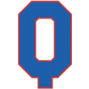

|
|
|  |
Romeo Harding Buys the Quebec Nordiques Saturday, September 3rd, 1904 One of the game's worst-kept secrets burst forth this afternoon when the Quebec Nordiques announced that the club had been sold to Romeo Harding Harding, who made a fortune in the auto industry, wasted no time introducing himself to Quebec fans during a press conference at a posh downtown hotel. "I've won everywhere I've gone. I win. I am a winner. I will build a winner here in Quebec and Nordiques fans can count on a long streak of winning in the future," he said. "I've got some ideas on how to modernize running the ballclub and how to reach out to the fan base and get them involved. But, really, I didn't pay this much money to sit around and not compete for the National League pennant each and every season. I'm going to win here, too, and I can't wait for the victory parades." Harding is known for being demanding in his expectations in dealing with people and financially, he's generous. |


|